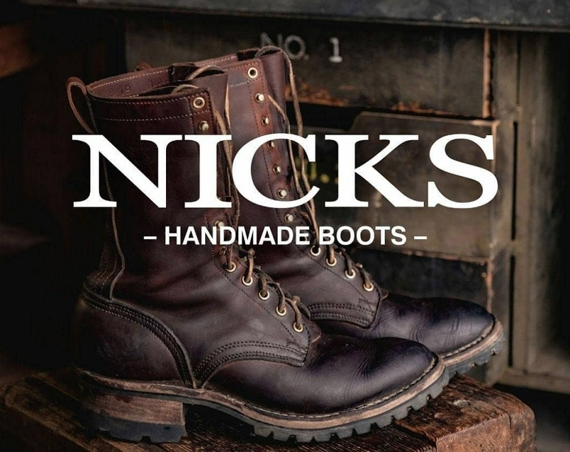
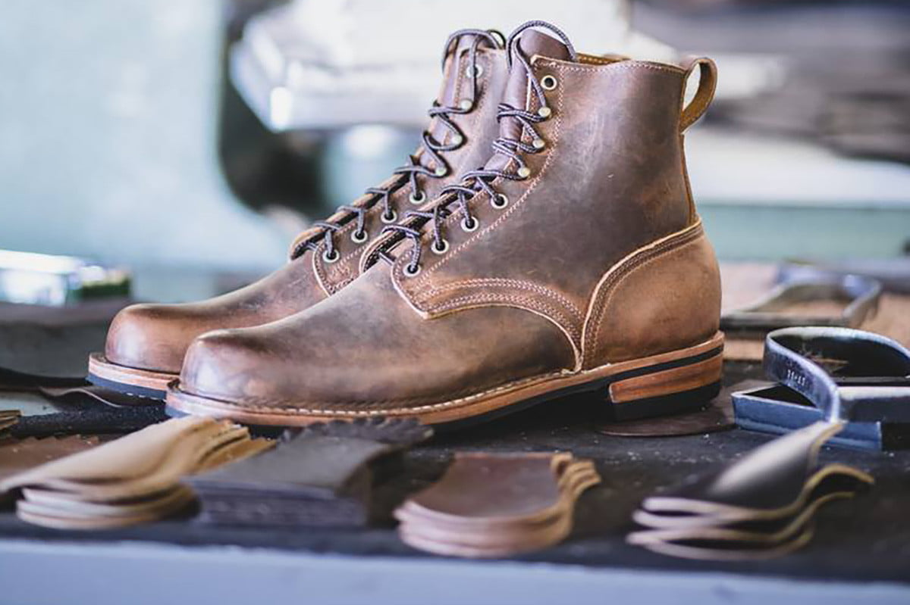
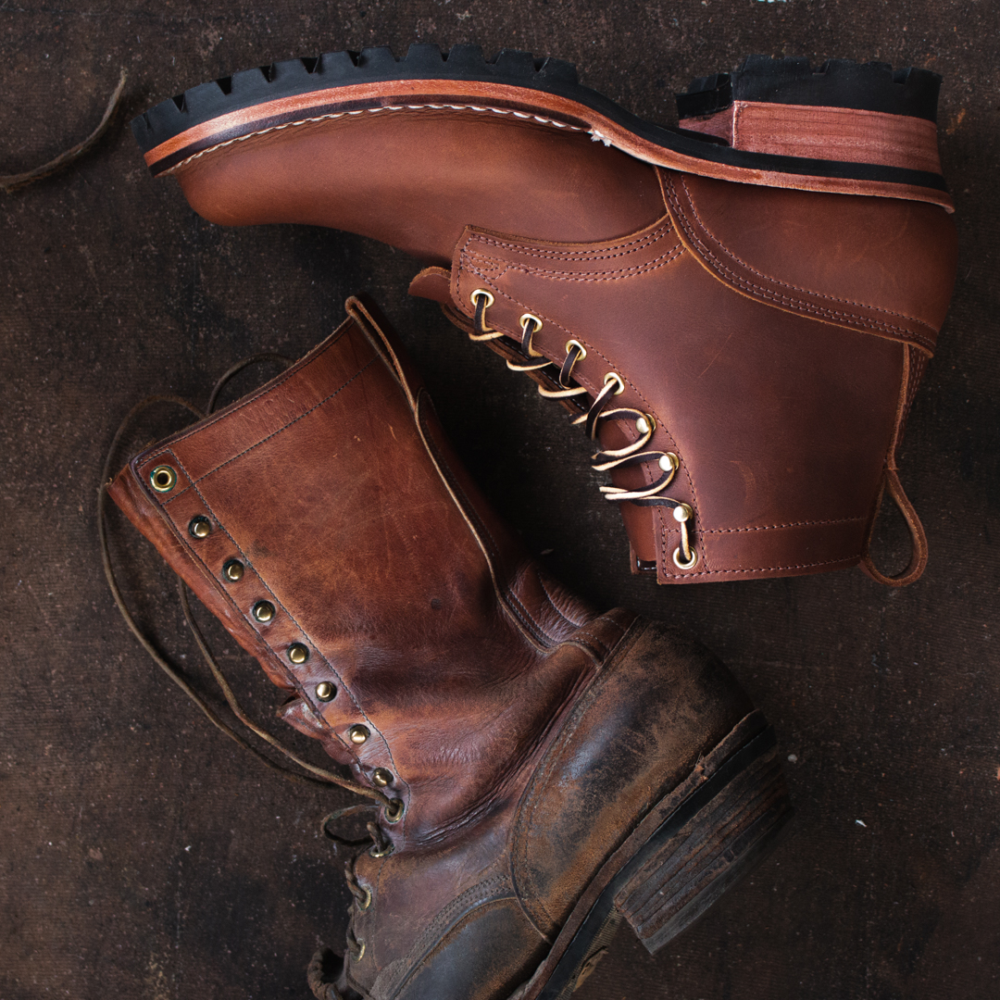

In 1964, Nicks Boots began the tradition of expertly making the best handmade boots on the market. After 50 years, Nicks is still located in Spokane, WA, continuing on that same tradition.
Heritage Boots
Don't necessarily need working footwear, but still, want casual boots of the highest order?
That is exactly what Nicks Boots has in store for you with our line of casual boots. These boots are perfect for casual wear, whether you want them as fashion boots or for when the inclement weather calls for a hardier, sturdier breed of footwear. Nicks' casual boots for men and women are available in several designs, perfect for whatever you might want them for. Our casual boots are rebuildable, so you can keep them in working order for years or decades to come. We offer both traditional boots in 6-inch and 8-inch heights, with a variety of style soles. Nicks' casual boots are handmade and can be customized to size. Every boot is lasted by hand. You have your choice of sole, should you prefer a lug sole for the utmost in traction or a smooth western sole.
That is exactly what Nicks Boots has in store for you with our line of casual boots. These boots are perfect for casual wear, whether you want them as fashion boots or for when the inclement weather calls for a hardier, sturdier breed of footwear. Nicks' casual boots for men and women are available in several designs, perfect for whatever you might want them for. Our casual boots are rebuildable, so you can keep them in working order for years or decades to come. We offer both traditional boots in 6-inch and 8-inch heights, with a variety of style soles. Nicks' casual boots are handmade and can be customized to size. Every boot is lasted by hand. You have your choice of sole, should you prefer a lug sole for the utmost in traction or a smooth western sole.


Work Boots
If you work on your feet, then you need the best work boots.
Work boots are an investment in your feet, and the less you invest the fewer dividends will be had. Your feet will suffer and so will you. Our leather work boots are available for almost any profession, hand-stitched, double-welted and made from the same lots of leather to ensure consistency and quality. We know that specialty work demands specialty boots, and you can expect the quality, comfort, and durability that has kept customers coming back to Nicks for decades. Nicks' American-made work boots can be made-to-order and customized, so you can have the features that you desire in a work boot. They are also rebuildable, so you can keep them working as hard and as long as you are.
Work boots are an investment in your feet, and the less you invest the fewer dividends will be had. Your feet will suffer and so will you. Our leather work boots are available for almost any profession, hand-stitched, double-welted and made from the same lots of leather to ensure consistency and quality. We know that specialty work demands specialty boots, and you can expect the quality, comfort, and durability that has kept customers coming back to Nicks for decades. Nicks' American-made work boots can be made-to-order and customized, so you can have the features that you desire in a work boot. They are also rebuildable, so you can keep them working as hard and as long as you are.
Fire Boots
Serious work demands serious footwear, and that's exactly what Nicks' firefighter boots are.
These are serious boots, designed to hold up in the harshest of conditions and keep you going all day, every day. Every one of our wildland firefighter boots is certified by the National Fire Protection Association (NFPA). The experts in fighting fires have certified these boots for exactly the use they are built for, so you can trust that they will do the job. In fact, Nicks' firefighter work boots have been some of the most popular models in the industry for years. Customer after customer has worn them through wildfire season and either had theirs rebuilt or come back for another pair because they are built to pass a trial by fire.
These are serious boots, designed to hold up in the harshest of conditions and keep you going all day, every day. Every one of our wildland firefighter boots is certified by the National Fire Protection Association (NFPA). The experts in fighting fires have certified these boots for exactly the use they are built for, so you can trust that they will do the job. In fact, Nicks' firefighter work boots have been some of the most popular models in the industry for years. Customer after customer has worn them through wildfire season and either had theirs rebuilt or come back for another pair because they are built to pass a trial by fire.

Motorcycle Boots
The best motorcycle boots protect your feet, are comfortable to wear for extended periods, and suit your style of riding and motorcycle.
It's a lot like choosing a pair of work boots. You start with what kind of boots are going to suit what you're doing, and then you get a pair of boots that does the job and that you can stand to wear. Our Motorcycle boots were developed with Damien Garcia and Dan Sammons. This boot is designed for moto-riders who need a durable boot for both on and off the bike.
Made to Order Boots
Nicks Handmade Boots has been building the best handmade boots since 1964. With our Made to Order Boots, you can choose to customize your own boots with the many options available. While all of our boots are made to fit your feet, these custom boots allow you to choose the style and configuration best fit for your work.
Whether you’re looking for firefighter boots, logger boots, safety boots, steel toe boots, or other handmade safety boots, you can be sure your Nicks Boots are up to the job. After determining the right size, your boots will break in to give you that custom tailored feel.
Nicks MTO Boot Options allow you to customize the boot’s style and configuration beyond what is normally offered but does not change the fit of your handcrafted boots.

Limited Release Boots
These boots are Limited Run Collaboration boots and boots available in rare and limited run leathers with every customizable option available. Get yours before they sell out because once they are gone, they wont be made again.
1964 Leather
For the last two years, we've been working tirelessly with our USA tanneries to produce leather that is more similar to the "classic boot leather recipe" we used decades ago. The 1964 Brown is similar to these older leathers in temper and color. While our current work boot leathers are great and have worked well for years, we are always looking to improve. We have packed oils, waxes, and natural conditioners into the leather so that they'll feel even better out of the box. They are just as durable as our current offerings and work great in all applications, including fire. After field-testing the leather, it wears and burnishes like every boot should, gaining character as it takes a beating.

Resole, Rebuild
In need of quality boot repair services? Who better than Nicks Boots to repair them, as we are also one of the finest bootmakers that footwear can be purchased from. In addition to crafting custom boots, we also offer repair services to our customers.
Nicks' boots have been known to stay in good working condition for years, and if properly cared for can last a very long time indeed with only occasional trips to our boot repair shop. Our boots are handmade with old-world construction techniques, ensuring that they can be kept working in perpetuity.
Most leather boot repair services are of two varieties, beyond minor things such as replacing laces, the odd eyelet, or leather conditioning to restore the hide to a supple condition.